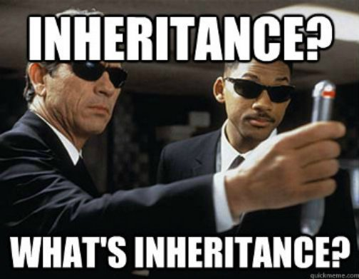
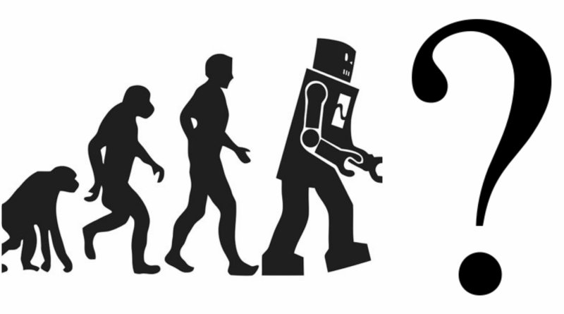
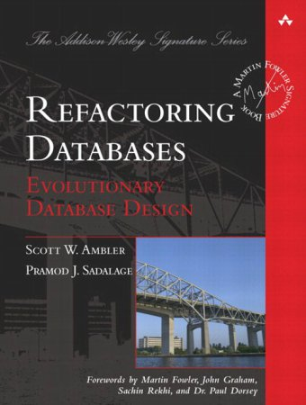
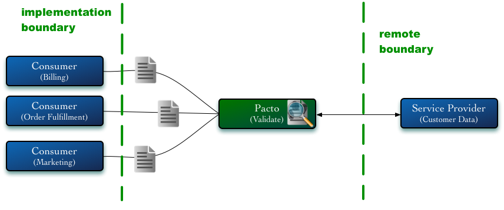
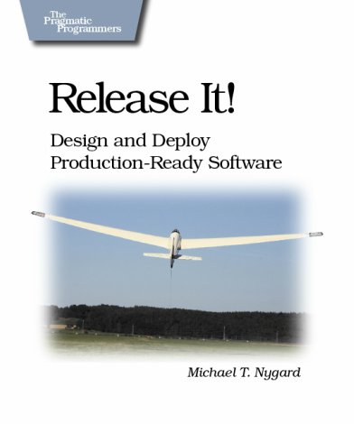
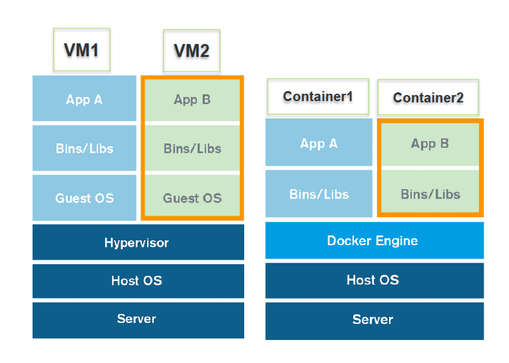

Microservices Buzzing
Buzzwords are first sign of professional support!

Buzzwords are first sign of professional support!
Definition is easy to remember, easy to share and too easy to interpret in wrong way.
~ Me - some time ago



This is the Unix philosophy: Write programs that do one thing and do it well. Write programs to work together. Write programs to handle text streams, because that is a universal interface
~ Douglas McIlroy

Someone from ThoughtWorks said that it should not be bigger than his head
.
Someone else claims that it should not have more than 1000 lines of code
.
Think about the team structure. If the code is too big to maintenance by a small team - to splitting it can be a good move.
.
Something which could be rewritten in two weeks
Deploying things that has changed instead of whole system, reduce a risk that we introduce new bugs to PROD.
Scaling smaller parts of whole system not just a whole system.
In most cases you don't have to have performance constrains on the whole system. Just some parts need more powerfull hardware.
.
Small independent head of controls takes it from you. Now you can change one part of you system or even completely rewrite without so much fear.
The same standards are mandatory. Without them is hard to imagine any kind of communication.
.
Difference is what makes things special and powerful.
.
Microservices communicate using well defined protocols and APIs as public interfaces. However because they are head of controls they can be written in any technology you want. This allows you to pick the right tools for the problem.
When you have small code base, you can minimize number of people working on it.
.
Samller teams are more productive
If you have clear API as public interface of your services and well know communication protocol, your internal parts can be much easier to reuse comparing to big monolith systems.
.
Right now when IoT is big buzzing word you never now when your internals become public or when you enable another channel of distribution.
Slicing by technical boundary is horizontal. In many cases when you will change some thing in front you will have to change it also in back. One change means two services to be deployed

A Bounded Context is an explicit boundary within which a domain model exists. Inside the boundary all terms and phrases of the Ubiquitous Language have specific meaning, and the model reflects the Language with exactness.


It is risky because across bounded context the meaning of the model can change. Account in Ordering service is something different that Account in User service.
Imagine that you have changed version of your shared library. Will it break your service communication? Good example can be a WSDL-binding.
Be conservative in what you do, be liberal in what you expect
Postel’s law
Two services are writing and reading to the same table. Every time you change service A you can want to change DB. How you will know the impact on service B?
Each service should own its own data

No matter how much you try you can introduce Breaking Change!
You should adopt some mechanisms which can at least warn you.


A lot of small services communicating via network will slow down your applications. The main problem is that you probably don't know how fast your application should be!
Provisioning
|
Vitalization
|


The golden rule: you make a change to a service and deploy it without changing anything else.
~ Sam Newman

/
#